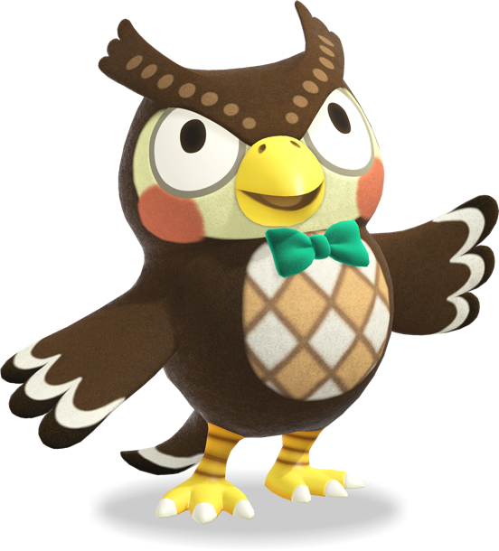

Tom Nook - The Island CEO

Tom Nook is the mastermind behind the Nook Inc. Island Getaway Package. With his sharp business sense and deep love for island life, he’s here to make your new start possible! A bit of a workaholic, Tom’s always thinking of new ways to help make your life on the island as comfortable as possible.
Favorite Quote: "A little hard work can go a long way... especially when you're doing it on a deserted island."
Timmy & Tommy - The Hardworking Nooklings
Timmy and Tommy are Tom Nook’s loyal nephews, and they’re eager to assist you with all things island-related! Whether you’re looking to buy supplies, upgrade your house, or just chat about the latest Nook Inc. products, these two are always ready to lend a hand. Their cheerful attitudes and dedication to Nook Inc. make them the perfect addition to the team.
Favorite Quote: "We're always here to help you build the island of your dreams!" – Timmy and Tommy
Isabelle - The Heart of Resident Services
Isabelle is the cheerful and hardworking secretary of Resident Services. She’s there to help with any questions, problems, or general advice you need to make your life on the island better. Whether you're looking for an island upgrade, organizing events, or just need a friendly face to talk to, Isabelle’s got your back. Plus, her love for nature and her warm, welcoming personality make her an island gem!
Favorite Quote: "I may be a little too into paperwork... but I do love a good festival!"
Blathers - The Museum Curator
Blathers runs the island's Museum, and he's always excited (and a bit nervous) about collecting the diverse bugs, fish, fossils, and art you bring in. Blathers is passionate about the island's wildlife and works tirelessly to make sure all your donations are properly displayed for future generations.
Favorite Quote: "Please... don’t make me talk about bugs again. But yes, donate as much as you can!"
K.K. Slider - The Island's Musical Talent
K.K. Slider is the resident musician, and every Saturday night, he performs live at your island’s plaza. He’s always ready to bring the island to life with his soothing guitar tunes and charming melodies. Want to request a song? K.K.'s got it covered.
Favorite Quote: "Music is the best way to relax and let your heart wander."
Orville and Wilbur - Dodo Airlines

Orville and Wilbur are the quirky, dependable pilots behind Dodo Airlines. These two are always ready to fly you to new islands or bring visitors to your own. Wilbur’s always the one to take off, and Orville handles the paperwork (though he’s still learning). Together, they’re a dynamic duo in the air!
Favorite Quote: "Wherever you want to go, we'll get you there!" – Orville